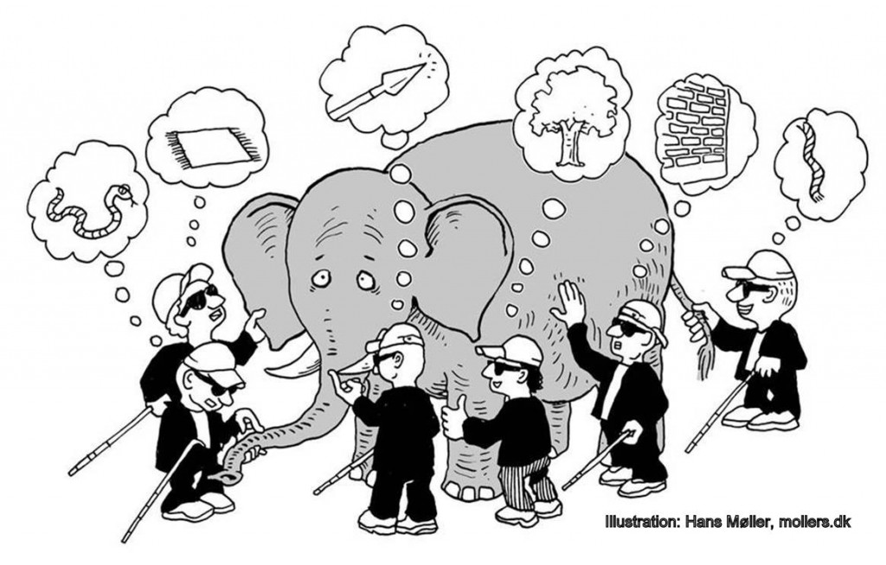

Methodological Skills for Research
Harsha Halgamuwe Hewage
Data Lab for Social Good Research Lab
Cardiff University, UK
2025-04-11
Assumptions
- This session is designed for undergraduate students.
- No prior knowledge of research philosophy or paradigms is expected.
- The session is descriptive and exploratory, not heavily theoretical or mathematical.
What we will cover
- Introduction to research philosophy: ontology, epistemology, axiology
- Understanding research paradigms: positivism, interpretivism, critical realism, pragmatism, post-structuralism
- Defining methodology vs. methods
- Overview of qualitative, quantitative, and mixed-methods approaches
- Exploring core research principles: objectivity, validity, reliability, reflexivity, and ethics
- Using real-world examples to illustrate abstract concepts
What we will not cover
- Detailed coverage of data analysis techniques
- In-depth theoretical derivations or philosophical debates
- Specific guidance on research proposal writing
- Full training in data collection instruments (e.g., surveys, interview guides)
Materials
You can find the lecture materials here.

Reality
What is reality
Blind men and the elephant
Different ways of seeing
- What is “out there” to know
- What, and how, can we know about it?
- How do we go about acquiring the knowledge to find out about it?
- What techniques or procedures will we use to acquire this knowledge?
Research onion

Source: © Mark Saunders, Philip Lewis and Adrian Thornhill 2006.
Philosophical foundations
Ontology
Ontology– concerns the nature of reality and what we believe exists.Asks: What is real? Do social phenomena have an existence independent of our perception?Realist vs. relativist ontologies: a single objective reality vs. multiple socially constructed realities.
Epistemology
Epistemology– concerns knowledge and how we can know about reality.Asks: What counts as acceptable knowledge? Can we obtain objective truth or only subjective understandings?- Positivist epistemology seeks observable, measurable evidence, while interpretivist epistemology emphasizes understanding meanings in context.
Axiology
Axiology– the study of values; examines the role of researchers’ values and ethics in research.- Considers issues of right and wrong, what is worth researching, and the value judgments we bring to research.
- Influences how we interpret findings and what we see as important (e.g., a researcher’s personal and cultural values can shape research focus).
Research paradigms
What is a research paradigm?
- A
research paradigmis a worldview or basic set of beliefs that guides how research is conducted. - It influences what should be studied, how it should be studied, and how results are interpreted.
- Major paradigms include positivism, post-positivism, interpretivism (constructivism), critical (realism), pragmatism, and postmodern/post-structural paradigms.
Paradigm – Positivism
Positivism– assumes an objective reality that can be measured. Advocates applying natural science methods to study social phenomena.- Seeks causal relationships and generalizable laws; uses testable hypotheses and focuses on observable facts (not subjective opinions).
- Positivist research aims to be value-free and objective, with the researcher as a neutral observer.
Paradigm – Interpretivism
Interpretivism– assumes reality is socially constructed and subjective, with multiple valid perspectives.- Emphasizes understanding the meanings and context of human experiences rather than finding universal laws. Research is often qualitative and contextual.
- Researchers recognize their own role and values in the process; reflexivity is encouraged to understand how interpretations are formed.
Paradigm – Critical Realism
Critical Realism– a post-positivist paradigm acknowledging an independent reality that exists, but our understanding of it is inevitably imperfect.- Distinguishes between the “real” (underlying structures) and the “observable”; unobservable mechanisms cause observable events.
- Uses theory to identify underlying social structures or mechanisms. Bridges positivism and interpretivism by accepting an external reality but viewing knowledge of it as theory-laden.
Paradigm – Pragmatism
Pragmatism– focuses on what works in practice. Truth is viewed as what is useful in answering the research question.- Rejects strict either/or choices between paradigms: methods and concepts are chosen for their practical usefulness rather than adherence to a single philosophy.
- Often underpins mixed methods research: quantitative and qualitative approaches are combined to provide actionable knowledge from multiple perspectives.
Paradigm – Post-Structuralism
Post-Structuralism– a critical paradigm (related to postmodernism) that questions stable structures and universal truths.- Argues that meaning and knowledge are not fixed; they are constructed through language, discourse, and power relations, and thus can be deconstructed.
- Challenges assumptions about reality and truth, highlighting how perspectives are influenced by culture, language, and power dynamics.
Research Paradigms: Examples
| Paradigm | Research Question | Approach | Methodology | Outcome/Focus |
|---|---|---|---|---|
| Positivism | What is the impact of traffic congestion on last-mile delivery times in urban areas? | Quantitative analysis using GPS and traffic data | Statistical modeling (e.g., regression) | Identifies causal relationships and general patterns to support predictions |
| Interpretivism | How do long-haul truck drivers experience life on the road? | Interviews and fieldwork to understand drivers’ perspectives | Thematic analysis, narrative inquiry | Explores subjective experiences and meanings from participants’ viewpoints |
Research Paradigms: Examples
| Paradigm | Research Question | Approach | Methodology | Outcome/Focus |
|---|---|---|---|---|
| Critical Realism | Why do delivery delays persist in a warehouse despite technology upgrades? | Investigate both surface data and underlying structures (e.g., labor, policies) | Case study, process tracing | Uncovers hidden mechanisms driving observable problems |
| Pragmatism | How can route planning tools be improved to balance delivery speed and driver satisfaction? | Combine delivery data with driver feedback to develop practical recommendations | Mixed methods (quantitative + qualitative) | Solves practical problems using a combination of methods that “work” |
Research Paradigms: Examples
| Paradigm | Research Question | Approach | Methodology | Outcome/Focus |
|---|---|---|---|---|
| Post-Structuralism | How is the concept of “efficiency” constructed in logistics marketing discourse? | Examine how companies use language to define “efficiency” in ads, reports, training manuals | Discourse analysis | Reveals how language shapes meaning and reflects power dynamics in the industry |
Activity – Locating your paradigm
- Think-Pair-Share: What discipline or field are you in? Discuss which research paradigm(s) are common in your field.
- Are there taken-for-granted assumptions about what should be studied, how to study it, and what counts as evidence in your field?
Principles
Principle – Objectivity
Objectivity– maintaining impartiality and avoiding personal biases when conducting research.- Researchers strive to observe and report facts as they are, independent of their own beliefs or values.
- In practice, complete objectivity is challenging, especially in social research – awareness of potential bias is crucial.
Principles – Validity & Reliability
Validity– the extent to which a study or measurement actually measures what it intends to measure (accuracy/truthfulness of findings).Reliability– the consistency or repeatability of results; a reliable study yields similar results under consistent conditions.- A study should aim to be both valid and reliable – e.g., a survey that consistently gives the same result is reliable, but it must also measure the right concept to be valid.
Principle – Reflexivity
Reflexivity– the practice of reflecting on how the researcher’s own beliefs, experiences, and biases influence the research.- Acknowledges that researchers are part of the social world they study, rather than completely objective outsiders.
- Reflexive research involves being transparent about one’s positionality and how it may shape data collection, analysis, and interpretations.
Principle – Ethics
Research Ethics– guidelines for the responsible conduct of research, defining what is acceptable or unacceptable behavior with participants and data.- Key ethical principles: informed consent, avoiding harm to participants, confidentiality and privacy, honesty and integrity in data and analysis.
- Ethical research ensures the rights and well-being of participants are protected and that the knowledge gained is trustworthy.
Activity – Ethics scenario
- Imagine you are conducting interviews on a sensitive topic (e.g., mental health). How would you ensure your study is ethical?
Research types
Quantitative research
Quantitative research– deals with numerical data and statistics to test hypotheses and examine relationships.- Typically seeks generalizable results and causal explanations; often associated with positivist approaches (aims for objectivity and measurement).
- Example: measuring class size and test scores across schools to see if smaller classes lead to higher performance (data analyzed statistically).
Qualitative research
Qualitative research– deals with non-numerical data (words, observations) to understand concepts, experiences, or social contexts in depth.- Produces rich, detailed insights rather than broad generalizations; often aligned with interpretivist approaches (understanding meanings in context).
- Example: interviewing teachers and students to explore how classroom size affects their experiences and learning, gathering in-depth narratives.
Mixed methods
Mixed methods– integrates both quantitative and qualitative approaches in one study to address a question from multiple angles.- Combines numerical data with narrative data to provide a more comprehensive understanding and to corroborate findings across methods.
- Example: studying climate change adaptation by analyzing climate data (quantitative) and interviewing community members (qualitative) to merge scientific and local perspectives.
Methodology vs. Methods
Methodology– the overall strategy or research design guiding how you investigate a problem (the logic of inquiry) (E.g., experimental, survey, ethnography, case study).Methods– the specific techniques or procedures for data collection and analysis (the tools) (E.g., questionnaires, interviews, observations, statistical analysis).- Remember: methodology is why and how you’re doing the research (at a strategic level), whereas methods are what you actually do to collect and analyze data.
Example – Poor housing design
Scenario: A report claims many new houses suffer from “poor design.” How might researchers study this issue differently based on their paradigm?Ontology: Is “poor design” a measurable fact (objective criteria) or a concept defined by stakeholders’ perceptions (subjective)?Epistemology: Should we gain knowledge by measuring design features (collect facts) or by understanding what “poor design” means to residents and designers (interpret meanings)?Methods: A positivist approach might survey homes against design quality criteria & quantify residents’ satisfaction. An interpretivist approach might conduct interviews or focus groups to explore how people perceive and discuss “poor design”.
Activity – Plan a study
- Choose a research question of interest (e.g., “How does social media use affect academic performance?”).
- What research approach would you use (qualitative, quantitative, or mixed) and why? What paradigm might this align with?
- Identify one or two specific methods you would use to collect data, and explain how these methods fit your research question and paradigm.
Wrapping up
- Methodological skills involve making informed choices at each stage of research – from philosophical stance to data collection methods.
- No single paradigm or method is “best” for all questions. The goal is to align your approach with your research question and objectives, and to be able to justify your choices.
- Understanding these foundations helps you critically evaluate others’ research and conduct your own studies in a rigorous, reflective, and ethical manner.